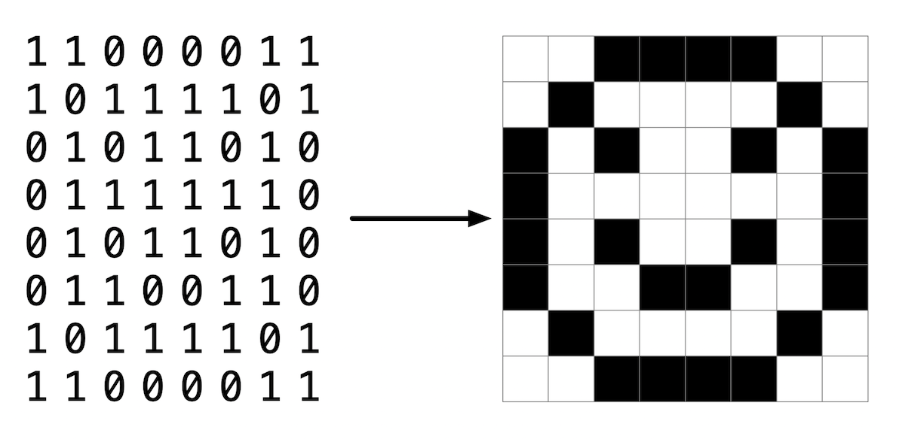
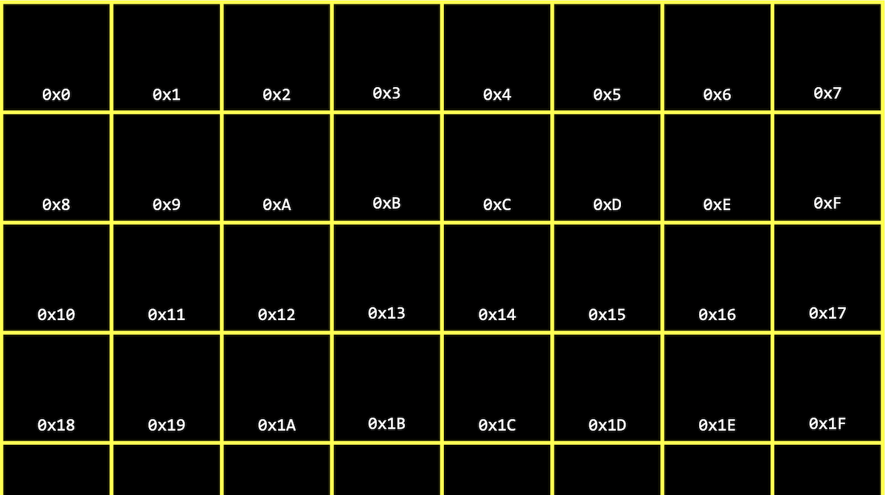
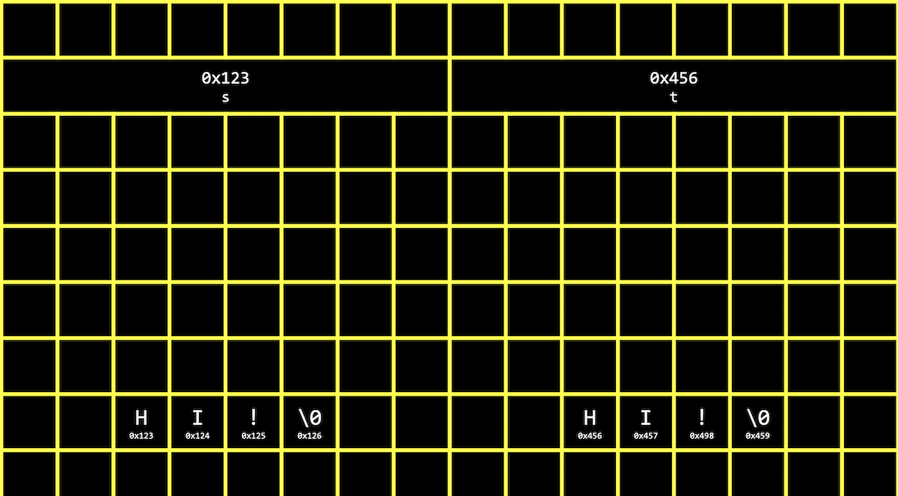
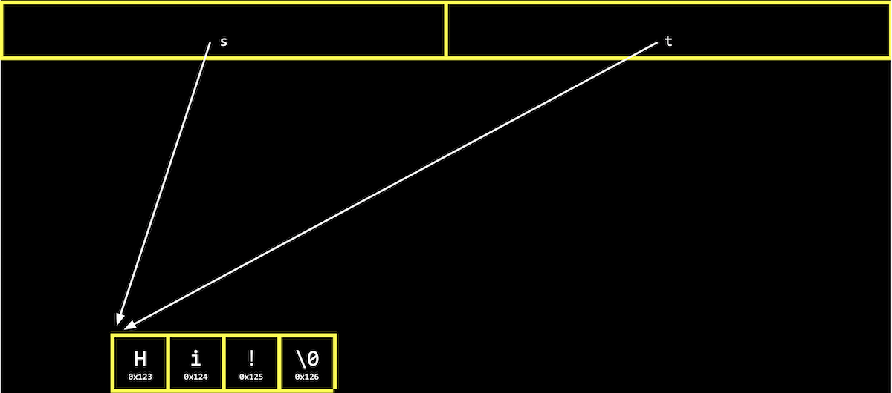
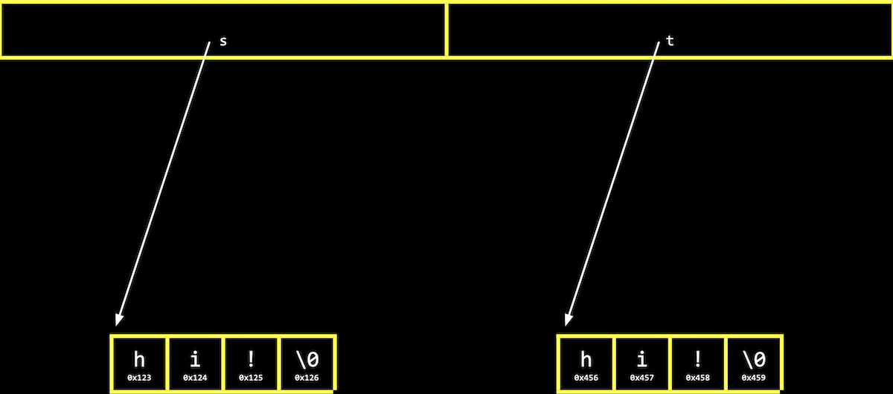

Lecture 4
- Pixels
- Hexadecimal
- Addresses, pointers
- Strings
- Pointer arithmetic
- Compare and copy
- Memory allocation
- valgrind
- Garbage values
- Swap
- Memory layout
- scanf
- Files
- JPEG
Pixels
- Last week, we took a look at memory and how we could use arrays to store data.
- We might zoom in further and further in an image, but very soon we’ll see individual pixels, like the ones in this puppet’s eye:
- Since this image is stored with a finite number of bytes, each perhaps representing a red, green, or blue value for each pixel, there is in turn a finite number of pixels we can see.
- A simpler image of a smiley face might be represented with a single bit per pixel:
 - We can visit cs50.ly/art with a Google Account to make a copy of a spreadsheet, which we can then fill with colors to create our own pixel art.
- Adobe Photoshop, a popular image editing software, includes a color picker that looks like this:
- Here, the color black is selected, and we see that the values for R, G, and B, or red, green, and blue respectively, are all 0. Furthermore, we see another value, #000000 that seems to represent all three values for the color black.
- We take a look at a few more colors:
- white, with R: 255, G: 255, and B: 255, and #FFFFFF
- red, with R: 255, G: 0, and B: 0, and #FF0000
- green, with R: 0, G: 255, and B: 0, and #00FF00
- blue, with R: 0, G: 0, and B: 255, and #0000FF
Hexadecimal
- We might notice a pattern for the new notation, where it appears that each value for red, green, and blue are represented with two character. It turns out that there’s another base system, hexadecimal, or base-16, where there are 16 digits:
0 1 2 3 4 5 6 7 8 9 A B C D E F- The digits start with 0 through 9, and continue with A through F as equivalents to the decimal values of 10 through 15.
- Let’s consider a two-digit hexadecimal number:
16^1 16^0 0 0- Here, the
0in the ones place (since09we’ll use0Ato represent 10 in decimal. - We can keep counting until
0F, which is equivalent to 15 in decimal.
- Here, the
- After
0F, we need to carry the one, as we would go from 9 to 10 in decimal:16^1 16^0 1 0- Here, the
1has a value of10in hexadecimal is 16 in decimal.
- Here, the
- With two digits, we can have a maximum value of
FF, or- The values in a computer’s memory are still stored as binary, but this way of representation helps us humans represent larger numeric values with fewer digits needed.
- With 8 bits in binary, the highest value we can count to is also 255, with
11111111. So two digits in hexadecimal can conveniently represent the value of a byte in binary. (Each digit in hexadecimal, with 16 values, maps to four bits in binary.)
Addresses, pointers
- For our computer’s memory, too, we’ll see hexadecimal used to describe each address or location:
- By writing
0xin front of a hexadecimal value, we can distinguish them from decimal values.
- By writing
- We might create a value
n, and print it out:#include <stdio.h> int main(void) { int n = 50; printf("%i\n", n); } - In our computer’s memory, there are now 4 bytes somewhere that have the binary value of 50, with some value for its address, like
0x123:
- A pointer is a variable that stores an address in memory, where some other variable might be stored.
- The
&operator can be used to get the address of some variable, as with&n. And the*operator declares a variable as a pointer, as withint *p, indicating that we have a variable calledpthat points to anint. So, to store the address of a variableninto a pointerp, we would write:int *p = &n; - In C, we can actually see the address with the
&operator, which means “get the address of this variable”:#include <stdio.h> int main(void) { int n = 50; int *p = &n; printf("%p\n", p); }$ make address $ ./address 0x7ffcb4578e5c%pis the format code to print an address withprintf. And we only need to use the name of the variable,p, after we’ve declared it.- In our instance of VS Code, we see an address with a large value like
0x7ffcb4578e5c. The value of the address in itself is not significant, since it’s just some location in memory that the variable is stored in; instead, the important idea is that we can use this address later. - We can run this program a few times, and see that the address of
nin memory changes, since different addresses in memory will be available at different times.
- With C, we can also go to specific addresses in memory, which might cause segmentation faults, where we’ve tried to read or write to memory we don’t have permission to.
- The
*operator is also the dereference operator, which goes to an address to get the value stored there. For example, we can say:#include <stdio.h> int main(void) { int n = 50; int *p = &n; printf("%p\n", p); printf("%i\n", *p); }$ ./address 0x7ffda0a4767c 50- Now, we see the value of the pointer itself (an address), and then the value at the address with
*p, which is50. - Since we declared
pto be anint *, the compiler knows that*pis anint, so the right number of bytes are read.
- Now, we see the value of the pointer itself (an address), and then the value at the address with
- In memory, we might have one variable,
p, with the value of some address, like0x123, stored, and another variable, an integer with the value50, at that addresss:
- Notice that
ptakes up 8 bytes, since in modern computer systems, 64 bits are used in order to address the billions of bytes of memory available. With 32 bits, we can only count up to about 4 billion bytes, or about 4GB of memory.
- Notice that
- We can abstract away the actual value of the addresses, since they’ll be different as we declare variables in our programs. We can simply think of
pas pointing at some value in memory:
- In the real world, we might have a mailbox labeled “p”, among many mailboxes with addresses. Inside our mailbox, we can put a value like
0x123, which is the address of some other mailbox that’s labeled “n”.
Strings
- We can declare a string with
string s = "HI!";, which will be stored one character at a time in memory. And we can access each character withs[0],s[1],s[2], ands[3]:
- But it turns out that each character, since it’s stored in memory, also has some unique address, and
sis actually just a pointer with the address of the first character:
sis a variable of typestring, which is a pointer to a character.- Recall that we can read the entire string by starting at the address in
s, and continue reading one character at a time from memory until we reach\0.
- It turns out that
string s = "HI!"is the same aschar *s = "HI!";. And we can use strings in C in the exact same way without the CS50 Library, by usingchar *. - Let’s print out a string:
#include <cs50.h> #include <stdio.h> int main(void) { string s = "HI!"; printf("%s\n", s); }$ make address $ ./address HI! - Now, we can remove the CS50 Library, and say:
#include <stdio.h> int main(void) { char *s = "HI!"; printf("%s\n", s); }$ make address $ ./address HI! - We can experiment and see the address of characters:
#include <cs50.h> #include <stdio.h> int main(void) { string s = "HI!"; char c = s[0]; char *p = &c; printf("%p\n", s); printf("%p\n", p); }$ make address $ ./address 0x402004 0x7ffd4227fdd7- We store the first character of
sintoc, and print out its address withp. We also print outsas an address with%p, and we see that the values are difference since we made a copy of the first character withchar c = s[0];.
- We store the first character of
- Now, we’ll print the address of the first character in
s:#include <cs50.h> #include <stdio.h> int main(void) { string s = "HI!"; char *p = &s[0]; printf("%p\n", p); printf("%p\n", s); }$ make address $ ./address 0x402004 0x402004- With
char *p = &s[0];, we store the address of the first character insinto a pointer calledp. And now, when we printpandsas addresses, we see the same value.
- With
- We can see the address of each character in
s:#include <stdio.h> int main(void) { char *s = "HI!"; printf("%p\n", s); printf("%p\n", &s[0]); printf("%p\n", &s[1]); printf("%p\n", &s[2]); printf("%p\n", &s[3]); }$ make address $ ./address 0x402004 0x402004 0x402005 0x402006 0x402007- Again, the address of the first character,
&s[0], is the same as the value ofs. And each following character has an address that is one byte higher.
- Again, the address of the first character,
- In the CS50 Library, a string is defined with just
typedef char *string;. Withtypedef, we’re creating a custom data type for the wordstring, making it equivalent tochar *.
Pointer arithmetic
- We can print out each character in a string:
#include <cs50.h> #include <stdio.h> int main(void) { string s = "HI!"; printf("%c\n", s[0]); printf("%c\n", s[1]); printf("%c\n", s[2]); printf("%c\n", s[3]); }$ make address $ ./address H I ! $- When we declare a
stringwith double quotes,", the compiler figures out where to put those characters in memory as an array.
- When we declare a
- Let’s simplify our code to use
char *and show just the printable characters:#include <stdio.h> int main(void) { char *s = "HI!"; printf("%c\n", s[0]); printf("%c\n", s[1]); printf("%c\n", s[2]); }$ make address $ ./address H I ! - But we can go to addresses directly:
#include <stdio.h> int main(void) { char *s = "HI!"; printf("%c\n", *s); printf("%c\n", *(s + 1)); printf("%c\n", *(s + 2)); }*sgoes to the address stored ins, and*(s + 1)goes to the location in memory with the next character, an address that is one byte higher.s[1]is syntactic sugar, like an abstraction for*(s + 1), equivalent in function but more human-friendly to read and write.
- Pointer arithmetic is the process of applying mathematical operations to pointers, using them just like numbers (which they are).
- We can declare an array of numbers, and access them with pointer arithmetic:
#include <stdio.h> int main(void) { int numbers[] = {4, 6, 8, 2, 7, 5, 0}; printf("%i\n", *numbers); printf("%i\n", *(numbers + 1)); printf("%i\n", *(numbers + 2)); printf("%i\n", *(numbers + 3)); printf("%i\n", *(numbers + 4)); printf("%i\n", *(numbers + 5)); printf("%i\n", *(numbers + 6)); }$ make address $ ./address 4 6 8 2 7 5 0- It turns out that we only need to add
1to the address ofnumbers, instead of4(even thoughints are 4 bytes in size), since the compiler already knows that the type of each value innumbersis 4 bytes. With+ 1, we’re telling the compiler to move the next value in the array, not the next byte. - And notice that
numbersis an array, but we can use it as a pointer with*numbers.
- It turns out that we only need to add
Compare and copy
- Let’s try to compare two integers from the user:
#include <cs50.h> #include <stdio.h> int main(void) { int i = get_int("i: "); int j = get_int("j: "); if (i == j) { printf("Same\n"); } else { printf("Different\n"); } }$ make compare $ ./compare i: 50 j: 50 Same $ ./compare i: 50 j: 42 Different- We compile and run our program, and it works as we’d expect, with the same values of the two integers giving us “Same” and different values “Different”.
- When we try to compare two strings, we see that the same inputs are causing our program to print “Different”:
#include <cs50.h> #include <stdio.h> int main(void) { char *s = get_string("s: "); char *t = get_string("t: "); if (s == t) { printf("Same\n"); } else { printf("Different\n"); } }$ make compare $ ./compare s: HI! t: BYE! Different $ ./compare s: HI! t: HI! Different- Even when our inputs are the same, we see “Different” printed.
- Each “string” is a pointer,
char *, to a different location in memory, where the first character of each string is stored. So even if the characters in the string are the same, this will always print “Different”.
- And
get_string, this whole time, has been returning just achar *, or a pointer to the first character of a string from the user. Since we calledget_stringtwice, we got two different pointers back. - We can fix our program with:
#include <cs50.h> #include <stdio.h> #include <string.h> int main(void) { char *s = get_string("s: "); char *t = get_string("t: "); if (strcmp(s, t) == 0) { printf("Same\n"); } else { printf("Different\n"); } }$ make compare $ ./compare s: HI! t: HI! Same - We’ll take a look at the values of
sandtas pointers:#include <cs50.h> #include <stdio.h> int main(void) { char *s = get_string("s: "); char *t = get_string("t: "); printf("%p\n", s); printf("%p\n", t); }$ make compare $ ./compare s: HI! t: HI! 0x19e06b0 0x19e06f0- We see that the addresses of our two strings are indeed different.
- Let’s visualize how this might look in our computer’s memory. Our first string might be at address 0x123, our second might be at 0x456, and
swill have the value of0x123, pointing at that location, andtwill have the value of0x456, pointing at another location:
- Since our computer puts each string at some location in memory for us, we need
sandtto point to each of them. And now we see why comparingsandtdirectly will always print “Different”.strcmp, in contrast, will go to each string and compare them character by character.
- Since our computer puts each string at some location in memory for us, we need
- In C, we can also get the address of
sort, and store them in a variable of the typechar **, a pointer to a pointer. - Let’s try to copy a string:
#include <cs50.h> #include <ctype.h> #include <stdio.h> #include <string.h> int main(void) { string s = get_string("s: "); string t = s; t[0] = toupper(t[0]); printf("s: %s\n", s); printf("t: %s\n", t); }$ make copy $ ./copy s: hi! s: Hi! t: Hi!- We get a string
s, and copy the value ofsintot. Then, we capitalize the first letter int. - But when we run our program, we see that both
sandtare now capitalized.
- We get a string
- Since we set
sandtto the same value, or the same address, they’re both pointing to the same character, and so we capitalized the same character in memory:

Memory allocation
- To actually make a copy of a string, we have to do a little more work, and copy each character in
sto somewhere else in memory. - We’ll need to use a new function,
malloc, to allocate some number of bytes in memory. And we’ll usefreeto mark memory as usable when we’re done with it, so the operating system can do something else with it.- Our computers might slow down if a program we’re running has a bug where it allocates more and more memory but never frees it. The operating system will take longer and longer to find enough available memory for our program.
- Let’s copy a string now:
#include <cs50.h> #include <ctype.h> #include <stdio.h> #include <stdlib.h> #include <string.h> int main(void) { char *s = get_string("s: "); char *t = malloc(strlen(s) + 1); for (int i = 0, n = strlen(s) + 1; i < n; i++) { t[i] = s[i]; } t[0] = toupper(t[0]); printf("s: %s\n", s); printf("t: %s\n", t); }- We create a new variable to point to a new string with
char *t. The argument tomallocis the number of bytes we’d like to use. We already know the length ofs, but we need to add 1 for the terminating null character. - Then, we copy each character, one at a time, with a
forloop. We usestrlen(s) + 1since we want to copy the null character too to end the string. In the loop, we sett[i] = s[i], copying the characters.
- We create a new variable to point to a new string with
- We could also use a library function,
strcpy:#include <cs50.h> #include <ctype.h> #include <stdio.h> #include <stdlib.h> #include <string.h> int main(void) { char *s = get_string("s: "); char *t = malloc(strlen(s) + 1); strcpy(t, s); t[0] = toupper(t[0]); printf("s: %s\n", s); printf("t: %s\n", t); free(t); }$ make copy $ ./copy s: hi! s: hi! t: Hi!- Now, we can capitalize the first letter of
t. - We’ll remember to call
freeont, since we allocated it ourselves.
- Now, we can capitalize the first letter of
- We can add some error-checking to our program:
#include <cs50.h> #include <ctype.h> #include <stdio.h> #include <stdlib.h> #include <string.h> int main(void) { char *s = get_string("s: "); char *t = malloc(strlen(s) + 1); if (t == NULL) { return 1; } strcpy(t, s); if (strlen(t) > 0) { t[0] = toupper(t[0]); } printf("s: %s\n", s); printf("t: %s\n", t); free(t); }- If our computer is out of memory,
mallocwill returnNULL, the null pointer, or a special value of all0bits that indicates there isn’t an address to point to. So we should check for that case, and exit iftisNULL. - We should also check that
thas a length, before trying to capitalize the first character.
- If our computer is out of memory,
- We can visualize how this looks in our computer’s memory:
- We’ve allocated memory at
0x456and settto point to it. Then, we usedstrcpyto copy each character’s value, starting from the addresssis pointing to, to the addresstis pointing to.
- We’ve allocated memory at
valgrind
- Let’s allocate memory for some integers:
#include <stdio.h> #include <stdlib.h> int main(void) { int *x = malloc(3 * sizeof(int)); x[1] = 72; x[2] = 73; x[3] = 33; }$ make memory $ ./memory $- We’ll use
mallocto get enough memory for 3 times the size of anint, which we can find out withsizeof. - We’ve deliberately made a mistake where we forgot arrays are 0-indexed, and started at
x[1]instead. Then, withx[3], we’re trying to access memory beyond the bounds of what we have access to. - We also don’t free the memory we’ve allocated.
- When we compile and run our program, though, nothing seems to happen. It turns out that our mistake wasn’t bad enough to cause a segmentation fault this time, though it might next time.
- We’ll use
valgrindis a command-line tool that we can use to run our program and see if it has any memory-related issues.- We’ll run
valgrind ./memoryafter compiling, and we’ll see a lot of output:$ valgrind ./memory ==5902== Memcheck, a memory error detector ==5902== Copyright (C) 2002-2017, and GNU GPL'd, by Julian Seward et al. ==5902== Using Valgrind-3.15.0 and LibVEX; rerun with -h for copyright info ==5902== Command: ./memory ==5902== ==5902== Invalid write of size 4 ==5902== at 0x401162: main (memory.c:9) ==5902== Address 0x4bd604c is 0 bytes after a block of size 12 alloc'd ==5902== at 0x483B7F3: malloc (in /usr/lib/x86_64-linux-gnu/valgrind/vgpreload_memcheck-amd64-linux.so) ==5902== by 0x401141: main (memory.c:6) ==5902== ==5902== ==5902== HEAP SUMMARY: ==5902== in use at exit: 12 bytes in 1 blocks ==5902== total heap usage: 1 allocs, 0 frees, 12 bytes allocated ==5902== ==5902== 12 bytes in 1 blocks are definitely lost in loss record 1 of 1 ==5902== at 0x483B7F3: malloc (in /usr/lib/x86_64-linux-gnu/valgrind/vgpreload_memcheck-amd64-linux.so) ==5902== by 0x401141: main (memory.c:6) ==5902== ==5902== LEAK SUMMARY: ==5902== definitely lost: 12 bytes in 1 blocks ==5902== indirectly lost: 0 bytes in 0 blocks ==5902== possibly lost: 0 bytes in 0 blocks ==5902== still reachable: 0 bytes in 0 blocks ==5902== suppressed: 0 bytes in 0 blocks ==5902== ==5902== For lists of detected and suppressed errors, rerun with: -s ==5902== ERROR SUMMARY: 2 errors from 2 contexts (suppressed: 0 from 0)- We’ll see some snippets like
Invalid write of size 4 at ... memory.c:9, which gives us a hint to look at line 9, where we’re usingx[3].
- We’ll see some snippets like
- We’ll fix that mistake:
#include <stdio.h> #include <stdlib.h> int main(void) { int *x = malloc(3 * sizeof(int)); x[0] = 72; x[1] = 73; x[2] = 33; }$ make memory $ ./memory $ valgrind ./memory ==6435== Memcheck, a memory error detector ==6435== Copyright (C) 2002-2017, and GNU GPL'd, by Julian Seward et al. ==6435== Using Valgrind-3.15.0 and LibVEX; rerun with -h for copyright info ==6435== Command: ./memory ==6435== ==6435== ==6435== HEAP SUMMARY: ==6435== in use at exit: 12 bytes in 1 blocks ==6435== total heap usage: 1 allocs, 0 frees, 12 bytes allocated ==6435== ==6435== 12 bytes in 1 blocks are definitely lost in loss record 1 of 1 ==6435== at 0x483B7F3: malloc (in /usr/lib/x86_64-linux-gnu/valgrind/vgpreload_memcheck-amd64-linux.so) ==6435== by 0x401141: main (memory.c:6) ==6435== ==6435== LEAK SUMMARY: ==6435== definitely lost: 12 bytes in 1 blocks ==6435== indirectly lost: 0 bytes in 0 blocks ==6435== possibly lost: 0 bytes in 0 blocks ==6435== still reachable: 0 bytes in 0 blocks ==6435== suppressed: 0 bytes in 0 blocks ==6435== ==6435== For lists of detected and suppressed errors, rerun with: -s ==6435== ERROR SUMMARY: 1 errors from 1 contexts (suppressed: 0 from 0)- Now, we see less output, with only one error telling us
12 bytes ... are definitely lost, in that we’ve allocated them, but not freed them.
- Now, we see less output, with only one error telling us
- Once we free our memory, we’ll see no errors:
#include <stdio.h> #include <stdlib.h> int main(void) { int *x = malloc(3 * sizeof(int)); x[0] = 72; x[1] = 73; x[2] = 33; free(x); }$ make memory $ ./memory $ valgrind ./memory ==6812== Memcheck, a memory error detector ==6812== Copyright (C) 2002-2017, and GNU GPL'd, by Julian Seward et al. ==6812== Using Valgrind-3.15.0 and LibVEX; rerun with -h for copyright info ==6812== Command: ./memory ==6812== ==6812== ==6812== HEAP SUMMARY: ==6812== in use at exit: 0 bytes in 0 blocks ==6812== total heap usage: 1 allocs, 1 frees, 12 bytes allocated ==6812== ==6812== All heap blocks were freed -- no leaks are possible ==6812== ==6812== For lists of detected and suppressed errors, rerun with: -s ==6812== ERROR SUMMARY: 0 errors from 0 contexts (suppressed: 0 from 0)
Garbage values
- Let’s take a look at this program:
#include <stdio.h> #include <stdlib.h> int main(void) { int scores[3]; for (int i = 0; i < 3; i++) { printf("%i\n", scores[i]); } }$ make garbage $ ./garbage 68476128 32765 0- We declare an array,
scores, but we didn’t initialize it with any values. - The values in the array are garbage values, or whatever unknown values that were in memory, from whatever program was running in our computer before.
- We declare an array,
- If we aren’t careful with how our programs access memory, users might end up seeing data from previous programs, like passwords. And if we try to go to an address that’s a garbage value, our program is likely to crash from a segmentation fault.
- We watch Pointer Fun with Binky, an animated video demonstrating pointers,
malloc, and dereferencing. The code from the video might look like this in one program:int main(void) { int *x; int *y; x = malloc(sizeof(int)); *x = 42; *y = 13; y = x; *y = 13; }- In the first two lines, we declare two pointers. Then, we allocate memory for
x, but noty, so we can assign a value to the memoryxis pointing to with*x = 42;. But*y = 13;is problematic, since we haven’t allocated any memory fory, and the garbage value there points to some area in memory we likely don’t have access to. - We can write
y = x;so thatypoints to the same allocated memory asx, and use*y = 13;to set the value there.
- In the first two lines, we declare two pointers. Then, we allocate memory for
Swap
- We’ll have a volunteer on stage try to swap two liquids, one orange liquid in one glass, and one purple liquid in another. But we need a third glass to temporarily pour one liquid into, such as the orange liquid in the first glass. Then, we can pour the purple liquid into the first glass, and finally the orange liquid from the third glass into the second.
- Let’s try to swap the values of two integers:
#include <stdio.h> void swap(int a, int b); int main(void) { int x = 1; int y = 2; printf("x is %i, y is %i\n", x, y); swap(x, y); printf("x is %i, y is %i\n", x, y); } void swap(int a, int b) { int tmp = a; a = b; b = tmp; }$ make swap $ ./swap x is 1, y is 2 x is 1, y is 2- In our
swapfunction, we have a third variable to use as temporary storage space as well. We putaintotmp, and then setato the value ofb, and finallybcan be changed to the original value ofa, now intmp. - But, if we tried to use that function in a program, we don’t see any changes.
- In our
- It turns out that the
swapfunction gets passed in copies of variables,aandb, which are local variables that only the surrounding function can access. Changing those values won’t changexandyin themainfunction:#include <stdio.h> void swap(int a, int b); int main(void) { int x = 1; int y = 2; printf("x is %i, y is %i\n", x, y); swap(x, y); printf("x is %i, y is %i\n", x, y); } void swap(int a, int b) { printf("a is %i, b is %i\n", a, b); int tmp = a; a = b; b = tmp; printf("a is %i, b is %i\n", a, b); }$ make swap $ ./swap x is 1, y is 2 a is 1, b is 2 a is 2, b is 1 x is 1, y is 2- Our
swapfunction works while we’re inside it.
- Our
Memory layout
- Within our computer’s memory, different types of data that need to be stored for our program are organized into different sections:

- The machine code section is our compiled program’s binary code. When we run our program, that code is loaded into memory.
- Just below, or in the next part of memory, are global variables we declared in our program.
- The heap section is an empty area from where
malloccan get free memory for our program to use. As we callmalloc, we start allocating memory from the top down. - The stack section is used by functions and local variables in our program as they are called, and grows upwards.
- If we call
mallocfor too much memory, we will have a heap overflow, since we end up going past our heap. Or, if we call too many functions without returning from them, we will have a stack overflow, where our stack has too much memory allocated as well. - Our program for swapping integers might have a stack that looks like this:
------------------------- | | | | | | | | | ------------------------- | | | | | | | | | ------------------------- | | | | | | | | | ------------------------- | | | | | | | | | ------------------------- | tmp | | | | | swap ------------------------- | a 1 | b 2 | ------------------------- main | x 1 | y 2 | -------------------------- Our
mainfunction has two local variables,xandy. Ourswapfunction is created on top ofmainwhen it’s called, and has three local variables,a,b, andtmp. - Once
swapreturns, its memory is freed and its values are now garbage values, and the variables inmainhaven’t been changed.
- Our
- By passing in the address of
xandy, ourswapfunction will be able to change the original values:void swap(int *a, int *b) { int tmp = *a; *a = *b; *b = tmp; }- The addresses of
xandyare passed in frommaintoswapwith&xand&y, and we use theint *asyntax to declare that ourswapfunction takes in pointers. - We save the first value to
tmpby following the pointera, and then set the second value to location pointed to byaby following the second pointerb. - Finally, we store the value of
tmpto the location pointed to byb.
- The addresses of
- Our stack might look like this:
------------------------- | | | | | | | | | ------------------------- | | | | | | | | | ------------------------- | | | | | | | | | ------------------------- | | | | | | | | | ------------------------- | tmp | | | | | swap ------------------------- | a 0x123 | b 0x127 | ------------------------- main | x 1 | y 2 | -------------------------- If
xis at0x123,awill contain that value.bwill have the address ofy,0x127.
- If
- Our first step will be putting the value of
xintotmpby following the pointera:------------------------- | | | | | | | | | ------------------------- | | | | | | | | | ------------------------- | | | | | | | | | ------------------------- | | | | | | | | | ------------------------- | tmp 1 | | | | | swap ------------------------- | a 0x123 | b 0x127 | ------------------------- main | x 1 | y 2 | ------------------------- - Then, we’ll follow the pointer
b, and store the value there into the location pointed to bya:------------------------- | | | | | | | | | ------------------------- | | | | | | | | | ------------------------- | | | | | | | | | ------------------------- | | | | | | | | | ------------------------- | tmp 1 | | | | | swap ------------------------- | a 0x123 | b 0x127 | ------------------------- main | x 2 | y 2 | ------------------------- - Finally, we’ll go to the location pointed to by
b, and put the value oftmpinto it:------------------------- | | | | | | | | | ------------------------- | | | | | | | | | ------------------------- | | | | | | | | | ------------------------- | | | | | | | | | ------------------------- | tmp 1 | | | | | swap ------------------------- | a 0x123 | b 0x127 | ------------------------- main | x 2 | y 1 | ------------------------- - Now,
swapcan return, and the variables inmainwill still be changed. - In our program, we’ll need to pass in the addresses of
xandyto ourswapfunction:#include <stdio.h> void swap(int *a, int *b); int main(void) { int x = 1; int y = 2; printf("x is %i, y is %i\n", x, y); swap(&x, &y); printf("x is %i, y is %i\n", x, y); } void swap(int *a, int *b) { int tmp = *a; *a = *b; *b = tmp; }$ make swap $ ./swap x is 1, y is 2 x is 2, y is 1- With
&x, we can get the address ofxto pass in.
- With
scanf
- We can get an integer from the user with a C library function,
scanf:#include <stdio.h> int main(void) { int x; printf("x: "); scanf("%i", &x); printf("x: %i\n", x); }$ make scanf $ ./scanf x: 50 x: 50scanftakes a format,%i, so the input is “scanned” for that format. We also pass in the address in memory where we want that input to go with&x.
- We can try to get a string the same way:
#include <stdio.h> int main(void) { char *s; printf("s: "); scanf("%s", s); printf("s: %s\n", s); }$ clang -o scanf scanf.c $ ./scanf s: HI! s: (null)makeprevents us from making this mistake, so we’ll useclangto demonstrate.- We haven’t actually allocated any memory for
s, soscanfis writing our string to an unknown address in memory.
- We can call
mallocto allocate memory:#include <stdio.h> int main(void) { char *s = malloc(4); printf("s: "); scanf("%s", s); printf("s: %s\n", s); }$ clang -o scanf scanf.c $ ./scanf s: HI! s: HI! - And we can declare an array of 4 characters:
#include <stdio.h> int main(void) { char s[4]; printf("s: "); scanf("%s", s); printf("s: %s\n", s); }$ clang -o scanf scanf.c $ ./scanf s: helloooooooooooooooooooooooooooooooooooooooooooooooooooooooooooooooooo s: helloooooooooooooooooooooooooooooooooooooooooooooooooooooooooooooooooo Segmentation fault (core dumped)- Now, if the user types in a string of length 3 or less, our program will work safely. But if the user types in a longer string,
scanfmight be trying to write past the end of our array into unknown memory, causing our program to crash.
- Now, if the user types in a string of length 3 or less, our program will work safely. But if the user types in a longer string,
get_stringfrom the CS50 library continuously allocates more memory asscanfreads in more characters, so it doesn’t have this issue.
Files
- With the ability to use pointers, we can also open files, like a digital phone book in
phonebook.c:// Saves names and numbers to a CSV file #include <cs50.h> #include <stdio.h> #include <string.h> int main(void) { // Open CSV file FILE *file = fopen("phonebook.csv", "a"); if (!file) { return 1; } // Get name and number string name = get_string("Name: "); string number = get_string("Number: "); // Print to file fprintf(file, "%s,%s\n", name, number); // Close file fclose(file); }fopenis a new function we can use to open a file with a new type,FILE.- We can use
fprintfto write to a file. - We’ll see more details about working with files in this week’s problem set.
JPEG
- Let’s look at a program that opens a file and tells us if it’s a JPEG file, a particular format for image files, with
jpeg.c:// Detects if a file is a JPEG #include <stdint.h> #include <stdio.h> typedef uint8_t BYTE; int main(int argc, char *argv[]) { // Check usage if (argc != 2) { return 1; } // Open file FILE *file = fopen(argv[1], "r"); if (!file) { return 1; } // Read first three bytes BYTE bytes[3]; fread(bytes, sizeof(BYTE), 3, file); // Check first three bytes if (bytes[0] == 0xff && bytes[1] == 0xd8 && bytes[2] == 0xff) { printf("Yes, possibly\n"); } else { printf("No\n"); } // Close file fclose(file); }$ make jpeg $ ./jpeg .src4/lecture.jpg Yes, possibly- First, we define a
BYTEas 8 bits, so we can refer to a byte as a type more easily in C. - Then, we’ll read from a file with a function called
fread. - We can compare the first three bytes (in hexadecimal) to the three bytes required to begin a JPEG file. If they’re the same, then our file is likely to be a JPEG file (though, other types of files may still begin with those bytes). But if they’re not the same, we know it’s definitely not a JPEG file.
- First, we define a
- It turns out that BMP files, another format for images, have even more bytes in its header, or beginning of the file.
- We’ll learn more about these in this week’s problem set as well, and even implement our own version of image filters, like one that only shows the color red:
#include "helpers.h" // Only let red through void filter(int height, int width, RGBTRIPLE image[height][width]) { // Loop over all pixels for (int i = 0; i < height; i++) { for (int j = 0; j < width; j++) { image[i][j].rgbtBlue = 0x00; image[i][j].rgbtGreen = 0x00; } } }- Here, we have a loop that iterates over all the pixels in a two-dimensional array, and sets the blue and green values to 0.